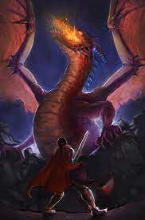

The Dragon
The dragon is a powerful and charming opponent and a suitable opponent for Beowulf. The dragon is perfectly suited to lead to Beowulf's downfall, and in fact, some readers see it as a symbolic representation of death itself: the unique personal ending that awaits each person. Hrothgar warns Beowulf that every warrior has an invincible enemy waiting, even if it's just old age, and he prepares us to think of dragons this way. However, the dragon also symbolizes the particular fate that awaits the Geats and pagan society in general. The dragon was "driven to defend the pagan gold through long vigils, albeit to little effect". Like Beowulf, the dragon used its power to accumulate a great treasure, but in the end, all the treasure did was lead to its death. The treasure also led to Beowulf's death. Perhaps the Christian narrator of the poem sees the greed for treasure as a kind of spiritual death suffered by infidels who value treasure more than heaven. The dragon hid his treasure in a cart or tomb.